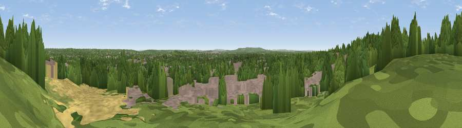

Viewpoint near Hawley
#33556 in England · top 33% of its area beats it · near HawleyThe view, rendered

A 360° render of this exact spot computed from the terrain model, tree cover and land cover — summer colours, afternoon light, calibrated against photographs of famous viewpoints. Real trees, hedges and buildings will differ in detail.
The panorama
Grey silhouette: terrain skyline in each direction (720 bearings, Earth curvature and refraction included). Dashed green: skyline with trees (+15 m) and buildings (+8 m) as obstacles. Blue strip: how far the ground is visible on each bearing.
Where the view opens
Wedge length = distance to the farthest visible ground on that bearing (vegetation-aware). Rings at 10, 25 and 50 km.
What fills the view
56% woodland · 29% built-up · 8% grassland · 7% cropland
Angular shares of the visible panorama (visual magnitude), not map area. Landscape diversity 0.47 (0–1 Shannon).
Key numbers
More beautiful places nearby
The staircase of upgrades: each row has a higher view potential than everything closer. Driving times are estimates from straight-line distance, calibrated against real road routing — check an actual route before setting out.
| Place | Direction | Drive | Score |
|---|---|---|---|
| Viewpoint near Crowthorne | NNW · 5 km | ~11 min | 45.4 |
| High Curley Hill | ENE · 7 km | ~14 min | 49.7 |
| Viewpoint near Upper Hale | SSW · 8 km | ~17 min | 58.3 |
| Viewpoint near Puttenham | SSE · 12 km | ~22 min | 62.0 |
| Viewpoint near Wanborough | SE · 13 km | ~24 min | 65.5 |
| Viewpoint near Compton | SE · 14 km | ~26 min | 66.7 |
| Viewpoint near Hascombe | SE · 24 km | ~40 min | 70.1 |
| Viewpoint near Fernhurst | SSE · 30 km | ~47 min | 75.1 |
51.31717, -0.77490 · source: screening · position refined by local search. Computed location — check access rights before visiting.